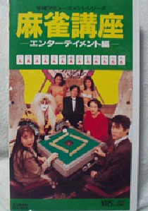
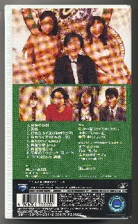

某インターネットオークションで麻雀入門ビデオを見つけた。この手のものはほとんど揃っているので、今更どうということはない。しかしタイトルに「麻雀講座・エンターテーメント編」とある。
（「麻雀講座」はいいけれど、「エンターテーメント編」とはなんだろう？
ちと記憶にないが....）と思いつつクリックしてみた。するとそこにはこんなパッケージの図柄が。

（おお、水着美人が写っているではないか。あれ？、その水着美人に囲まれてニヤけているのは井出洋介さんではないかいな？。それになんだか歌舞伎役者みたいのも写っているな。なんだか判らないけど、持っていないことだけは確かだ。とりあえずゲットしとこう）。てなわけでさっそく「購入」をクリックした。
送られてきたビデオを見ると、真ん中に写って間違いなく、いまをときめく井出洋介プロ。歌舞伎役者と思ったのは、カブキロックスというバンドの「氏神」というメンバーだった。

いつ頃、制作販売されたものかも判らないが、井出さんの頭髪の状態からすると（笑） 、ざっと今から10年前、平成４年頃のモノの感じ。
さっそく中身を見てみると、最初に思った「エンターテーメント編」というのは、要するにお遊びの麻雀入門講座ということだった。井出洋介氏を講師として、水着美人やらカブキロックスに混じって、ジュンチャンのジュン、チートイのミキ、ピンフのカズミという二つ名を持つマージャンプロたちが手筋についてＱ＆Ａをしたり、回し打ちを披露したりするもの。
完全なお遊びであったが、それにしても中身はたわいないものだった（冒頭のやり取りで、井出プロが「なにか質問はありませんか？」というと、水着の１人が「は〜い、こんな水着を着て、麻雀の勉強していいんでしょうか〜」と聞く。すると井出氏が「いいとも〜」とやりとりするところは、バカバカしくて面白かった）。
まぁ、「こんなばかばかしいビデオもあったんだよ」、という意味では、将来「お宝ビデオ」になるかも知れないので、大事にすることにした。（^-^；
|